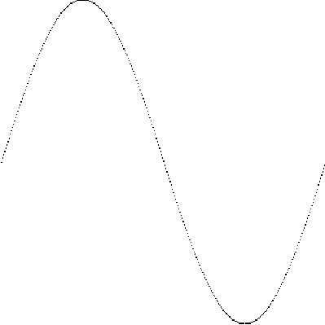

首页 > 编程笔记
Go语言输出正弦函数（Sin）图像
在Go语言中，正弦函数由 math 包提供，函数入口为 math.Sin，正弦函数的参数为 float64，返回值也是 float64。在使用正弦函数时，根据实际精度可以进行转换。
Go语言的标准库支持对图片像素进行访问，并且支持输出各种图片格式，如 JPEG、PNG、GIF 等。
首先给出本节完整的代码：
灰度图是一种常见的图片格式，一般情况下颜色由 8 位组成，灰度范围为 0～255，0 表示黑色，255 表示白色。
初始化好的灰度图默认的灰度值都是 0，对的是黑色，由于显示效果的效果不是很好，所以这里将所有像素设置为 255，也就是白色。
要将正弦函数放在图片上需要考虑以下一些因素：
将这些处理逻辑汇总为代码如下：
1) 第 2 行，生成 0 到 size（300）的 x 坐标轴。
2) 第 5 行，计算 math.Sin 的定义域，这段代码等效为：
float64(x) 表示将整型的 x 变量转换为 float64 类型，之后运算的所有表达式将以 float64 类型进行。
3) 第 8 行中，math.Sin(s)*size/2 表示将正弦函数的返回值幅度从 1 扩大到二分之一的 size。负号表示将正弦函数图形以图形中心上下翻转。叠加 size/2 表示将图形在 y 轴上向下偏移二分之一的 size（图片坐标系的 y 向下）。
4) 第 11 行将计算好的 x 轴和 y 轴数据，以灰度为 0（黑色）使用 SetGray() 方法填充到像素中。
写入图片的正弦函数图像如下图所示：
Go语言的标准库支持对图片像素进行访问，并且支持输出各种图片格式，如 JPEG、PNG、GIF 等。
首先给出本节完整的代码：
package main
import (
"image"
"image/color"
"image/png"
"log"
"math"
"os"
)
func main() {
// 图片大小
const size = 300
// 根据给定大小创建灰度图
pic := image.NewGray(image.Rect(0, 0, size, size))
// 遍历每个像素
for x := 0; x < size; x++ {
for y := 0; y < size; y++ {
// 填充为白色
pic.SetGray(x, y, color.Gray{255})
}
}
// 从0到最大像素生成x坐标
for x := 0; x < size; x++ {
// 让sin的值的范围在0~2Pi之间
s := float64(x) * 2 * math.Pi / size
// sin的幅度为一半的像素。向下偏移一半像素并翻转
y := size/2 - math.Sin(s)*size/2
// 用黑色绘制sin轨迹
pic.SetGray(x, int(y), color.Gray{0})
}
// 创建文件
file, err := os.Create("sin.png")
if err != nil {
log.Fatal(err)
}
// 使用png格式将数据写入文件
png.Encode(file, pic) //将image信息写入文件中
// 关闭文件
file.Close()
}
设置图片背景色
以下是设置图片背景的代码：
// 图片大小
const size = 300
// 根据给定大小创建灰度图
pic := image.NewGray(image.Rect(0, 0, size, size))
// 遍历每个像素
for x := 0; x < size; x++ {
for y := 0; y < size; y++ {
// 填充为白色
pic.SetGray(x, y, color.Gray{255})
}
}
代码说明如下：
- 第 2 行，声明一个 size 常量，值为 300。
- 第 5 行，使用 image 包的 NewGray() 函数创建一个图片对象，使用区域由 image.Rect 结构提供，image.Rect 描述一个方形的两个定位点 (x1,y1) 和 (x2,y2)，image.Rect(0,0,size,size) 表示使用完整灰度图像素，尺寸为宽 300，长 300。
- 第 8 行和第 9 行，遍历灰度图的所有像素。
- 第 11 行，将每一个像素的灰度设为 255，也就是白色。
灰度图是一种常见的图片格式，一般情况下颜色由 8 位组成，灰度范围为 0～255，0 表示黑色，255 表示白色。
初始化好的灰度图默认的灰度值都是 0，对的是黑色，由于显示效果的效果不是很好，所以这里将所有像素设置为 255，也就是白色。
绘制正弦函数轨迹
正弦函数是一个周期函数，定义域是实数集，取值范围是 [-1, 1]。用编程的通俗易懂的话来说就是：math.Sin 函数的参数支持任意浮点数范围，函数返回值的范围总是在 -1～1 之间（包含 1、-1）。要将正弦函数放在图片上需要考虑以下一些因素：
- math.Sin 的返回值在 -1～1 之间，需要考虑将正弦的输出幅度变大，可以将 math.Sin 的返回值乘以一个常量进行放大。
- 图片的坐标系原点在左上角，而 math.Sin 基于笛卡尔坐标系原点在左下角，需要对图像进行上下翻转和平移。
将这些处理逻辑汇总为代码如下：
// 从0到最大像素生成x坐标
for x := 0; x < size; x++ {
// 让sin的值的范围在0~2Pi之间
s := float64(x) * 2 * math.Pi / size
// sin的幅度为一半的像素。向下偏移一半像素并翻转
y := size/2 - math.Sin(s)*size/2
// 用黑色绘制sin轨迹
pic.SetGray(x, int(y), color.Gray{0})
}
代码说明如下：1) 第 2 行，生成 0 到 size（300）的 x 坐标轴。
2) 第 5 行，计算 math.Sin 的定义域，这段代码等效为：
rate := x / size s := rate * 2 * math.Pix 的范围是 0 到 size，因此除以 size 后，rate 的范围是 0～1 之间，再乘以 2π 后，s 的范围刚好是 0～2π 之间。
float64(x) 表示将整型的 x 变量转换为 float64 类型，之后运算的所有表达式将以 float64 类型进行。
3) 第 8 行中，math.Sin(s)*size/2 表示将正弦函数的返回值幅度从 1 扩大到二分之一的 size。负号表示将正弦函数图形以图形中心上下翻转。叠加 size/2 表示将图形在 y 轴上向下偏移二分之一的 size（图片坐标系的 y 向下）。
4) 第 11 行将计算好的 x 轴和 y 轴数据，以灰度为 0（黑色）使用 SetGray() 方法填充到像素中。
写入图片的正弦函数图像如下图所示：

写入图片文件
内存中的正弦函数图形是不可见的，我们选用 PNG 格式将图形输出为文件，Go语言提供了文件创建函数和 PNG 格式写入函数，代码如下：
// 创建文件
file, err := os.Create("sin.png")
if err != nil {
log.Fatal(err)
}
// 使用PNG格式将数据写入文件
png.Encode(file, pic) //将image信息写入文件中
// 关闭文件
file.Close()
代码说明如下：
- 第 2 行，创建 sin.png 的文件。
- 第 4 行，如果创建文件失败，返回错误，打印错误并终止。
- 第 8 行，使用 PNG 包，将图形对象写入文件中。
- 第 11 行，关闭文件。
关注公众号「站长严长生」，在手机上阅读所有教程，随时随地都能学习。内含一款搜索神器，免费下载全网书籍和视频。

微信扫码关注公众号